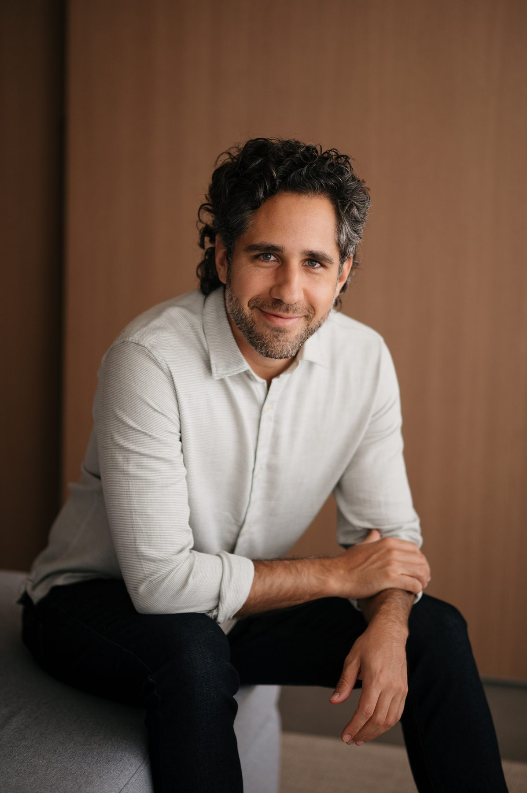
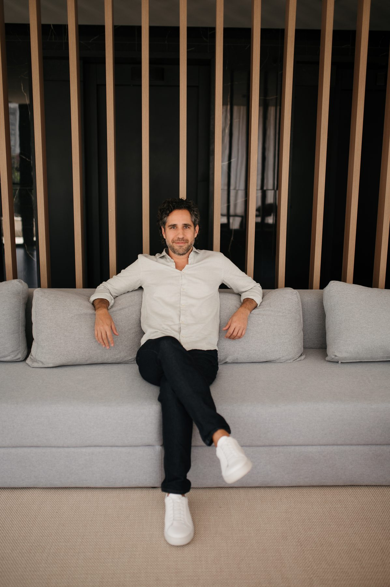
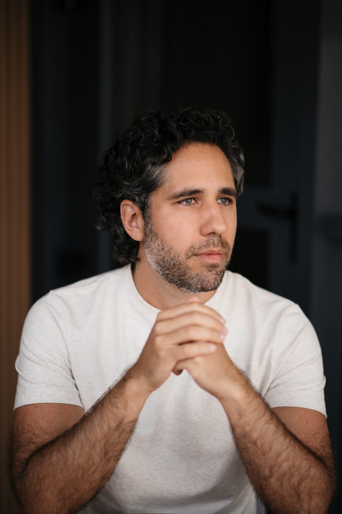
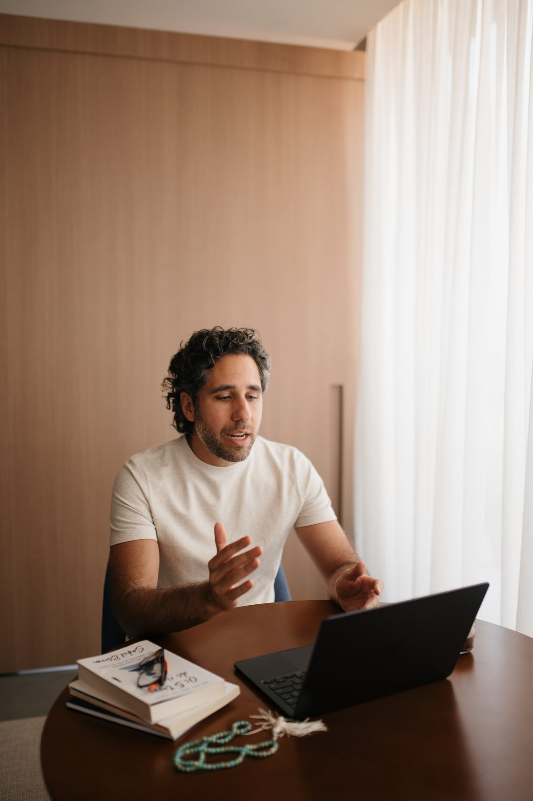
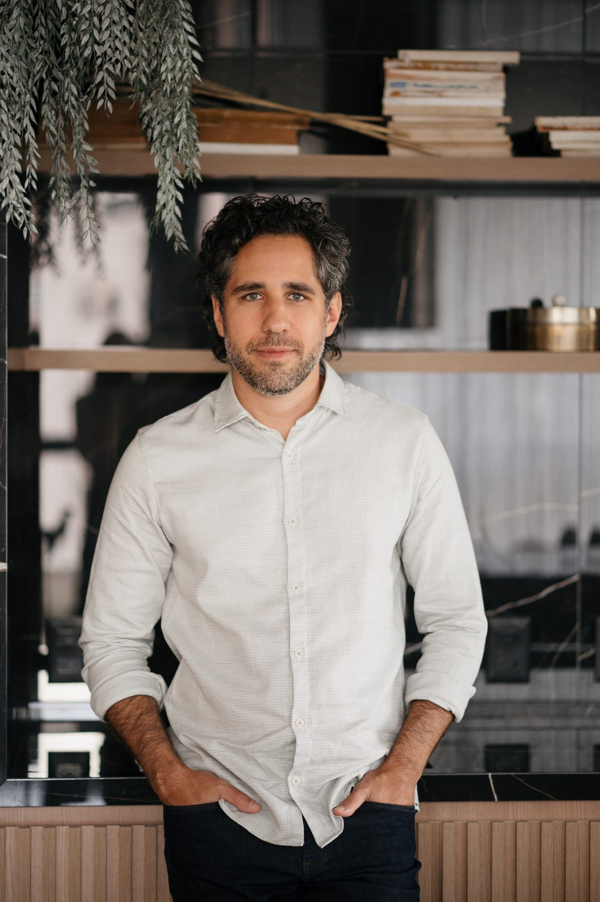

Desenvolvimento de lideranças estratégicas. +12 anos liderando equipes globais em multinacionais.

Prazer
Sou apaixonado por liderança e desenvolvimento de pessoas, desde sempre. Já fui professor de idiomas, voluntário na área de educação, e me fascinava ver pessoas atingindo um novo nível de transformação a partir da minha ajuda.
Me formei em Jornalismo pela Universidade Mackenzie, mas desde o segundo ano da faculdade migrei para a área de gestão e nunca mais saí. Construí uma carreira sólida liderando pessoas, depois grandes equipes, até chegar à gestão de times globais em multinacionais.
Sempre tive uma veia empreendedora forte. E hoje canalizo toda essa experiência para o que considero minha grande missão: o desenvolvimento de lideranças.

O que eu acredito
Acredito num mundo onde liderar é uma posição de transformação de si e do outro. Onde líderes geram espelhamento nas equipes, inspiram pessoas ao redor e constroem algo maior do que resultados.
Um mundo onde líderes vivem com equilíbrio, aportam valor real, desenvolvem pessoas e têm o reconhecimento, a credibilidade e o espaço que merecem pra brilhar.
Minha trajetória
Graduado em Jornalismo pelo Mackenzie, MBA em Negócios pela FGV-SP. Mas foi no dia a dia da gestão que minha carreira se construiu.
O paradigma da liderança
Quando se fala em liderança, a maioria das pessoas pensa em duas coisas: feedback e performance. Mas eu acredito que a liderança estratégica é algo muito maior do que isso. Um líder estratégico de verdade domina a combinação de duas grandes frentes: gestão e articulação.
É o domínio do seu próprio território: seu time, suas entregas, seus processos, seus resultados. É o que faz a operação funcionar.
É o domínio do ambiente: stakeholders, narrativa, influência, posicionamento estratégico. É o que faz a carreira avançar.
E é essa combinação que faz você assumir posições executivas, ser promovido, ter mais credibilidade e influenciar de maneira estratégica outros líderes e stakeholders. Liderança estratégica não é sobre entregar 120% para ser promovido. É sobre articular suas operações e projetos com as outras áreas e necessidades do negócio, de maneira intencional e estratégica.

Dois caminhos
Se esforça para bater 120% da meta todo mês e ganhar palminhas na reunião de resultado. Trabalha demais, está sempre cansado, sente que chegou num teto de crescimento e que, mesmo dando o sangue, as coisas andam devagar.
Agora me conta: qual dos dois você quer ser?
Resultados reais
Em vídeo
Por escrito
Conteúdo
Fiz uma sequência de lives curtas e direto ao ponto onde abordo pilares fundamentais dos meus programas de mentoria para líderes. O último link é um webinário completo falando de mim e do meu método.
Os 07 Princípios da Liderança Estratégica
Performance vs. Posicionamento
Capital Político: como comprar sua promoção
Tudo sobre liderança estratégica (webinário completo)

Vamos conversar?
Se você quer dar o próximo passo na sua carreira de liderança, me chama pra uma conversa.
Fale comigo no WhatsApp